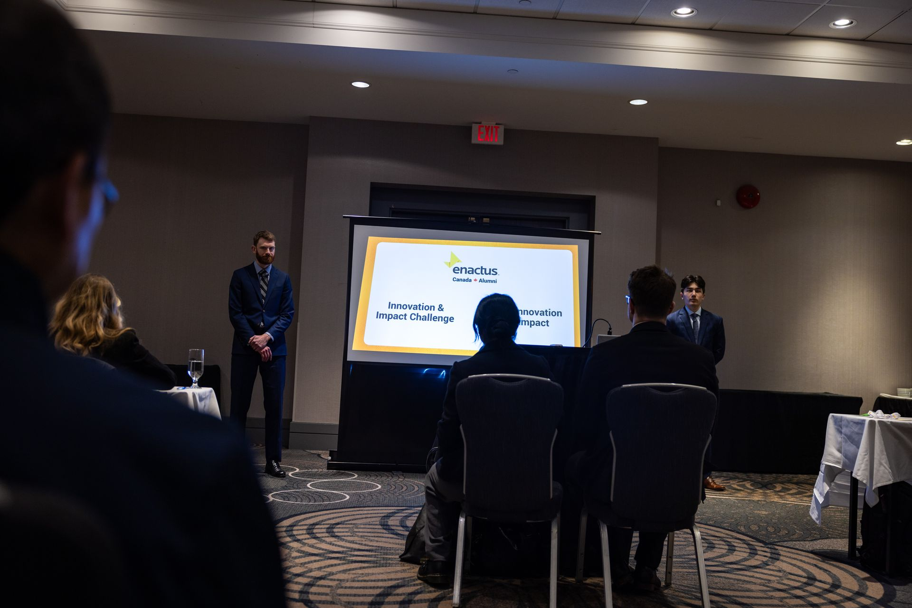
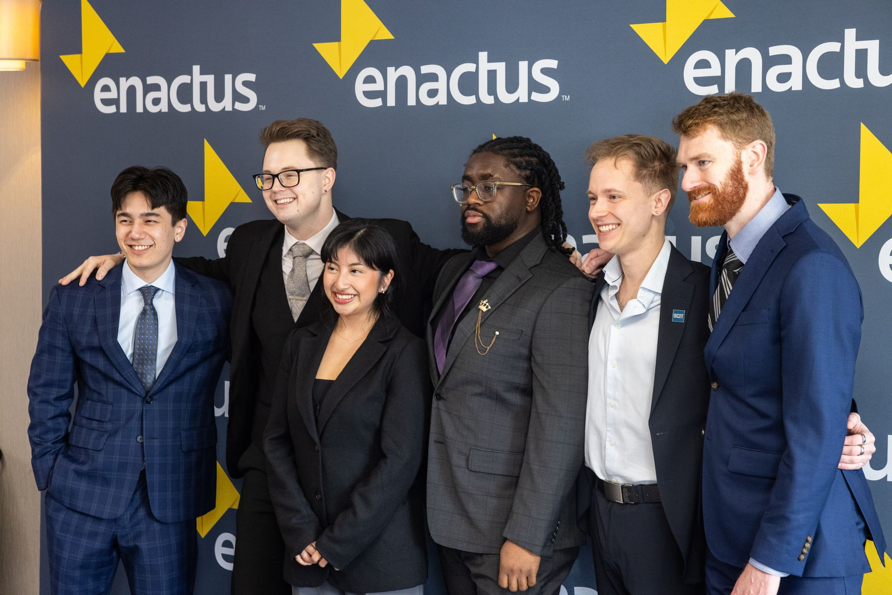
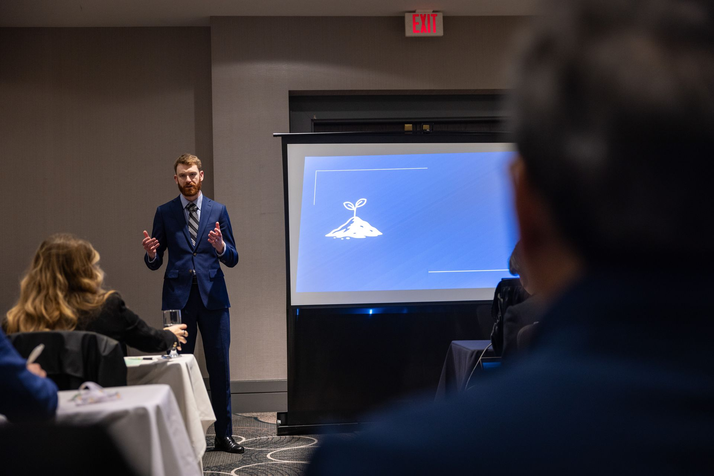

Lumóra
The Problem
Strict dairy quotas force local farms to dump millions of litres of viable milk annually, while standard agricultural plastics actively contaminate our soil systems.
Project Abstract
"Transforming unavoidable milk waste into a biodegradable fibre that works with nature rather than against it."
Unique Value Proposition
We solve two major environmental issues at once: microplastic contamination in agriculture and the dumping of millions of litres of excess milk due to dairy quotas by converting waste casein proteins into non-toxic fibre.
Impact Metrics & Credibility
Top 10 Innovation Finalist
Nationally recognized by the League of Innovators Accelerator as one of the top 10 youth-led innovations in Canada.


The Mission
To break the cycle of plastic contamination by transforming unavoidable milk waste into a natural fibre, creating value for farmers.
The Vision
To stop plastic contamination where it begins by initially replacing agricultural plastics on farms, with the understanding that the long-term possibilities for a biodegradable alternative are endless.

About Lumóra
Due to strict dairy quotas, local farms are legally barred from selling excess milk, routinely forcing them to dump millions of litres of perfectly viable product. Simultaneously, standard agricultural plastics are degrading into fields, contributing to the severe microplastic contamination of our food systems.
We saw an opportunity to intercept that waste. Lumora gathers the excess milk and processes it using a patented, formaldehyde-free chemical process. We meticulously extract the casein proteins, leaving only water and whey as byproducts. The dense proteins are then processed into a highly flexible fibre that can be spun into agricultural twine using existing textile machinery.
The genius lies in the complete circularity: our twine is 100% biodegradable, compostable, and completely non-toxic. Rather than leaching plastics into the soil as it degrades, the casein fibre releases nitrogen, organically enriching the soil it drops onto. We are currently poised to take deep advantage of emerging legislative policies—such as Bill C-59 and the Greening Government Strategy—which are actively turning corporate sustainability into a strict marketplace requirement.
Fueling The Operation
Lumora is entering a pivotal go-to-market phase requiring strict capital expenditure to transition from R&D into commercial production.
The Ask
Capital Expenditure required to construct out our pilot plant in Abbotsford to secure a full 1-year runway of high-volume processing.
$80,000
1-Year Capital Runway
Scale Goals
- Produce 5 tons of fibre annually through our pilot plant.
- Operate the processing plant at a secure 58% gross profit.
- Explore aggressive licensing opportunities globally.